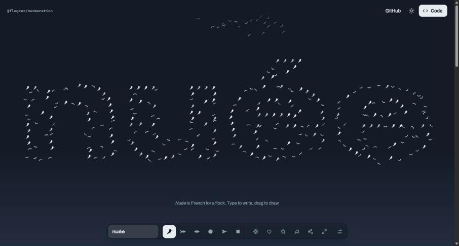
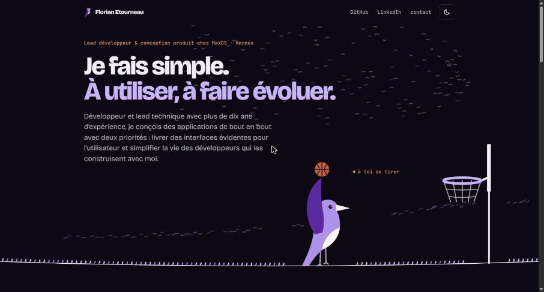
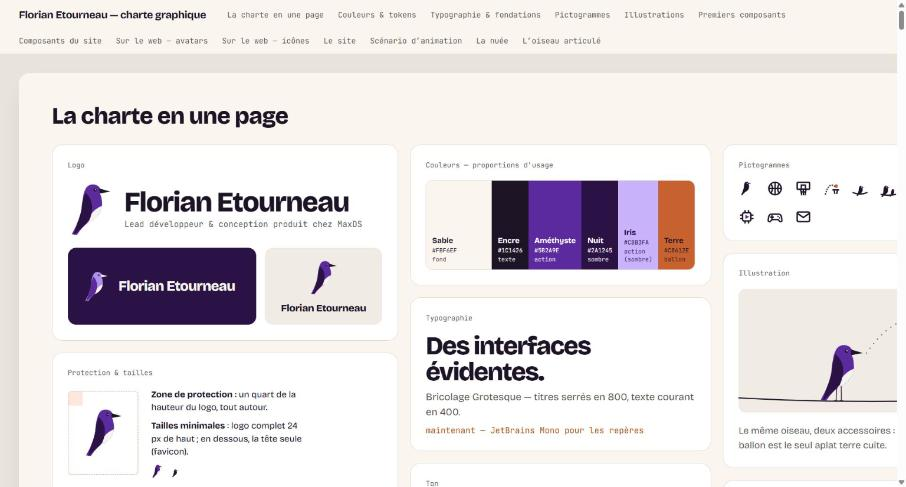
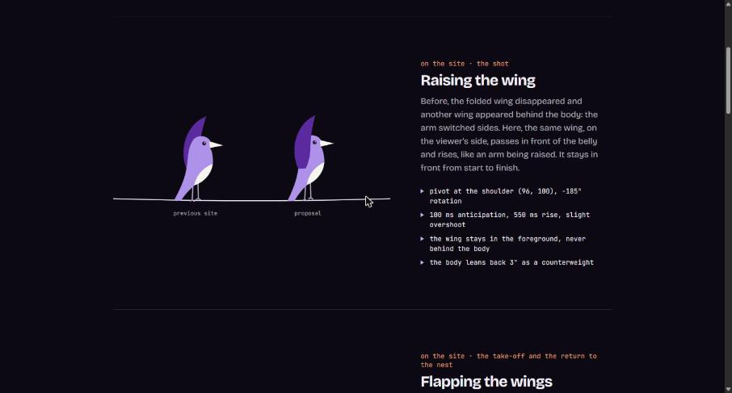
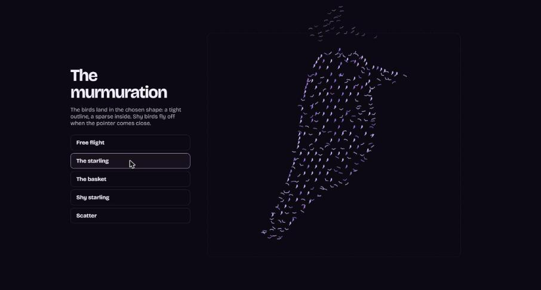

Open source · MIT github.com/FloGeez/murmuration@flogeez/murmuration
The engine of the flock, outside the brand: a plain bird, or any glyph. Its demo writes a word, draws a line, copies the code.
The demo · The source
Sturnus etourneaui · one bird, four parts, one package · npm i etourneau

Website florian-etourneau.dev florian-etourneau.dev Florian's site, where everything is used: the shot, the flight, the family on the wire, the flock along the read.
Open source · MIT github.com/FloGeez/murmuration@flogeez/murmuration
The engine of the flock, outside the brand: a plain bird, or any glyph. Its demo writes a word, draws a line, copies the code.
The demo · The source

Guidelines · in FrenchThe brand guidelinesColours, type, icons, illustrations, components, the animation script: everything, in one page.
Demo ·etourneau/starlingThe articulated starlingEvery gesture, with slow motion.

Demo ·etourneau/murmurationThe flock in the brandThe starling and the brand's shapes; ?debug shows the places.